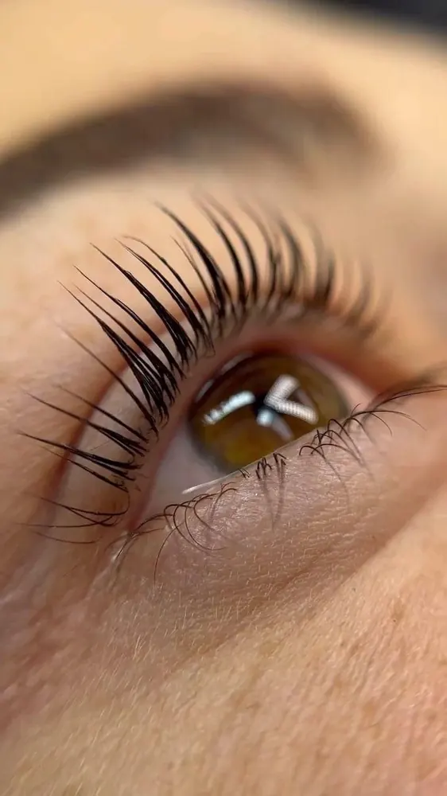

¿Qué es el lifting de pestañas y cuánto dura?
Por Beaux Cils Cali by Pao Cabrera ·

El lifting de pestañas es uno de los tratamientos más buscados porque da una mirada más abierta sin agregar nada artificial. Te explicamos en qué consiste y si es para ti.
¿Qué es el lifting de pestañas?
Es un tratamiento que curva tus pestañas naturales desde la raíz. El resultado se parece al de un encrespador, pero se mantiene durante semanas. Como trabaja sobre tu propia pestaña, se ve totalmente natural.
¿Cómo es el proceso?
- Se limpian las pestañas para retirar grasa y maquillaje.
- Se colocan sobre el párpado unos moldes de silicona del tamaño adecuado para tu ojo.
- Se peinan las pestañas sobre el molde y se aplican los productos que les dan la nueva forma.
- Al final se retiran los productos y se peinan las pestañas.
Durante el tratamiento permaneces con los ojos cerrados y acostada.
¿Cuánto dura el lifting de pestañas?
El efecto se mantiene varias semanas y se va perdiendo de forma gradual a medida que tus pestañas se renuevan. La duración exacta cambia de una persona a otra según su ciclo de crecimiento. Las primeras horas conviene no mojarlas para que la forma se fije bien.
Lifting o extensiones: ¿cuál elegir?
- Elige lifting si tus pestañas son largas pero rectas o apuntan hacia abajo, y quieres poco mantenimiento.
- Elige extensiones si quieres más largo, más volumen o más densidad de la que tienes naturalmente. Mira los tipos de extensiones.
En Beaux Cils Cali el lifting cuesta $55.000. Agenda en lifting de pestañas en Cali.
Preguntas rápidas
¿El lifting de pestañas daña las pestañas?
Aplicado por una profesional y respetando los tiempos de cada producto, es un tratamiento seguro para pestañas sanas. Si las tuyas están muy débiles, coméntalo en la valoración.
¿Cuánto cuesta el lifting de pestañas en Cali?
Con Pao Cabrera cuesta $55.000.